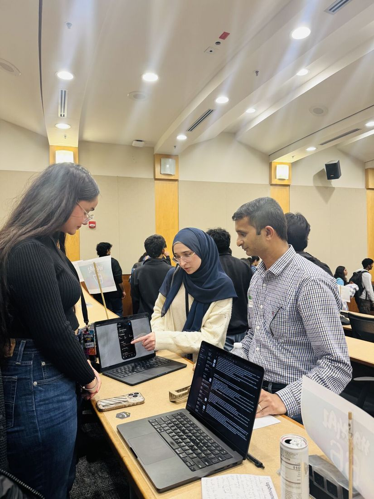
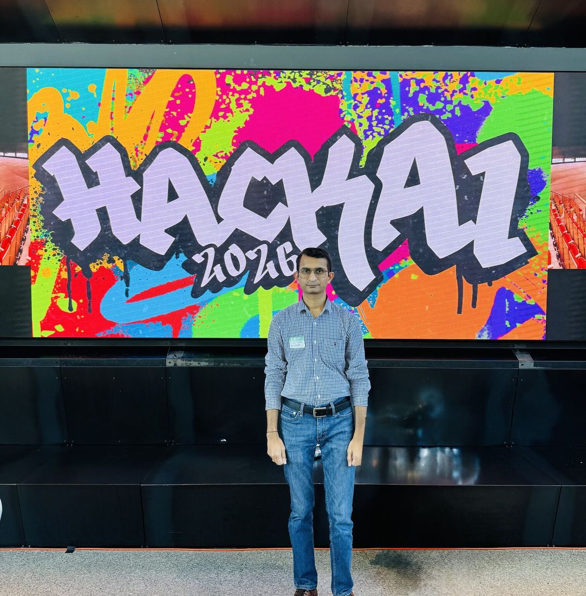

Forbes
A Call For AI Clarity, From Leading Thinkers And Doers
Quoted alongside commentators from CoSAI and SpaceX on what enterprises actually need from AI clarity and governance.
Market authority
Authority is not claimed, it is conferred. Journalists decide who they call. Editors decide whose evaluation they trust. Competition organisers decide who adjudicates. What follows is the record of those decisions in 2026.
Media footprint
Seven features across six outlets in 2026. Every one earned editorial, none paid placement, none employer-placed. Ordered by outlet reach.
Forbes
Quoted alongside commentators from CoSAI and SpaceX on what enterprises actually need from AI clarity and governance.
TechTarget
One of three named expert sources, alongside the CIO of Sabre and the Chief Data & AI Strategy Officer of ThoughtSpot. Quoted twice: the article develops a section from my point and closes its advice section with my comment.
CMSWire
On governing the operational cost of AI-powered contact centre platforms, the commercial edge of the Agentic FinOps research.
CMSWire
Why agent-ready marketing technology depends on connected enterprise data, and what has to change in the stack before agents can act on it.
MES Computing
How legacy network infrastructure quietly caps AI adoption, performance and enterprise innovation.
TechNewsWorld
On the AI data-centre buildout and the strain it places on global memory supply chains.
TechRound
How falling inference costs reshape SaaS pricing power, competitive position and long-term business models.
Long-form
Technical essays for practitioners, published independently of peer-reviewed work.
The false trade-off at the centre of every enterprise agent programme, and how to design your way out of it.
Designing secure, compliant, hybrid LLM systems for organisations that cannot send data to a public endpoint.
Selecting an AI coding engine on reliability, governance and enterprise fit rather than benchmark theatre.
Ecosystem
Where new architecture gets decided, someone has to separate the rigorous from the merely confident. Increasingly, institutions ask me to be that person.
| Institution | Forum | Assessed | Period | Standing |
|---|---|---|---|---|
| IEEE Transactions on Cloud Computing | Journal | 3 | Jul – Aug 2026 | Editor-invited. One author rebuttal engages substantively with the points raised. |
| ICAMC 2026: AI, Machine Learning & Cybersecurity | Conference | 10 | April 2026 | Technical Programme Committee member. |
| IEEE TEMSCON-ASPAC 2026: Technology & Engineering Management | Conference | 4 | May 2026 | Assigned reviewer, Asia-Pacific track. |
| IICAIET 2026: IEEE AI in Engineering & Technology | Conference | 4 | August 2026 | Certificate of Appreciation issued by the Chair, IEEE Sabah Subsection. |
| ICETICS 2026: IEEE Emerging Trends in Information & Systems | Conference | 4 | April 2026 | Named on the published reviewer list. |
| ICST 2026: Intelligent Computing & Sustainable Technologies | Conference | 2 | June 2026 | Programme committee member. |
Selected to adjudicate at the Los Angeles host site, assessing entries across Earth science, space exploration, software architecture and AI, and nominating teams for global judging.
Rubric-based adjudication of international student technology ventures, with the certificate crediting detailed feedback on eleven or more submissions.
Judged for the Artificial Intelligence Society at the University of Texas at Dallas, evaluating applied generative AI and cloud-native designs on architecture and feasibility.


Presented Agentic FinOps at the International Symposium on Networks, Computers and Communications. Published in IEEE Xplore.
Certificate of Presentation issued by the IEEE Sabah Subsection for Agentic AI Governance with Hierarchical Memory.
The highest grade an IEEE member may apply for directly, requiring a decade of significant performance and endorsement by a panel of Senior and Fellow members.
Next step
I take journalist enquiries, analyst briefings and conference platforms on enterprise AI, cloud economics and critical-infrastructure security.